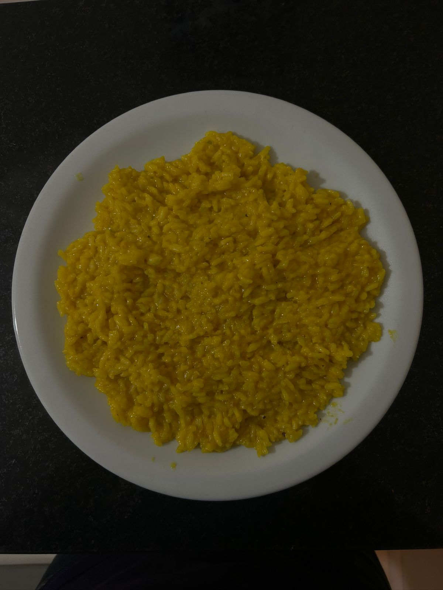
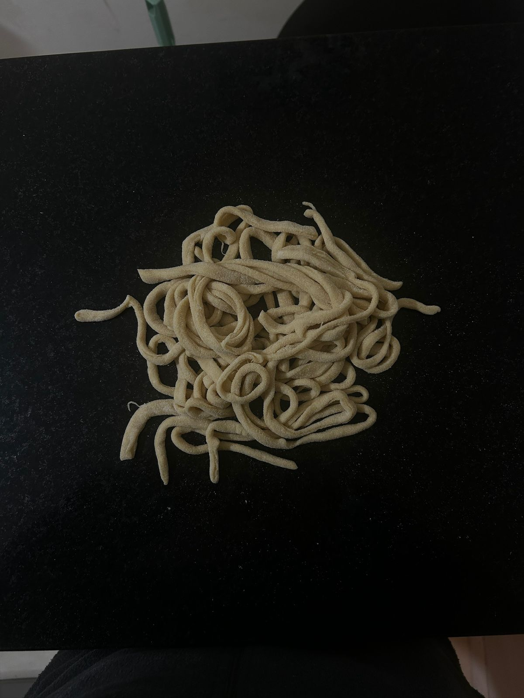
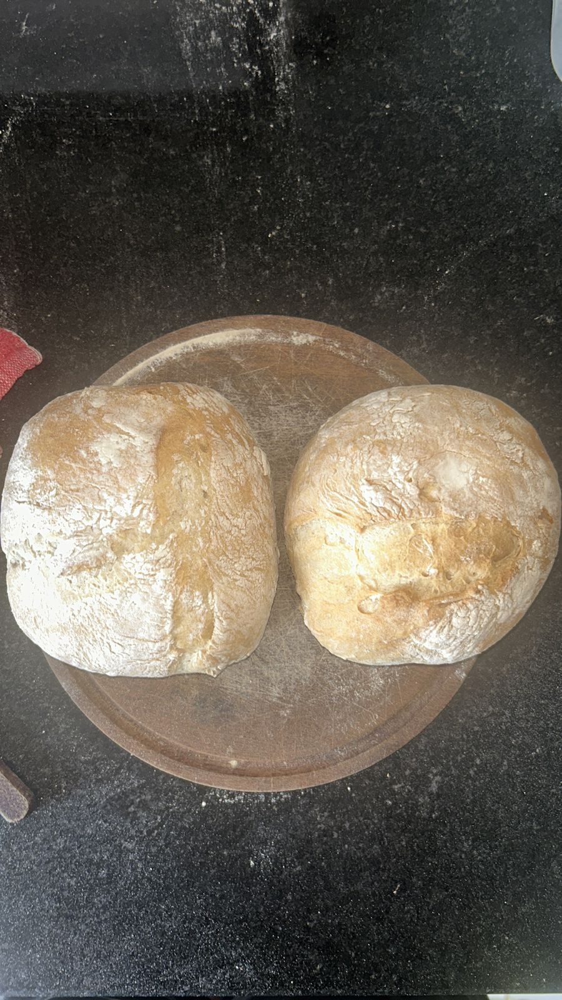

📖 Libro de recetas
Risotto
Ingredientes
- 1 taza de arroz
- 1 taza de agua
Pasos a seguir
- Calentar sartén.
- Sofreír arroz.
- Añadir agua y cocinar hasta que esté listo.

Fideos caseros
Ingredientes
- 100 g de harina 000 por persona
- 1 huevo cada 100 g de harina
Pasos a seguir
- Amasar hasta lograr una masa homogénea
- Dejar reposar 30 minutos
- Estirar la masa y cortar los fideos
- Hervir en agua con sal hasta que estén listos

Pan casero con masa madre
Ingredientes
- 500 g de harina de trigo
- 150 g de masa madre activa
- 300 ml de agua tibia
- 10 g de sal
- Opcional: 1 cucharada de aceite de oliva
Pasos a seguir
- En un bol grande, mezclar la harina con la masa madre y el agua hasta formar una masa pegajosa.
- Dejar reposar 30 minutos para que la harina absorba el agua (autólisis).
- Amasar incorporando la sal (y el aceite si lo usás) hasta obtener una masa lisa y elástica.
- Colocar la masa en un bol ligeramente aceitado, cubrir y dejar fermentar 4-6 horas, realizando pliegues cada 30-60 minutos.
- Formar el pan y colocarlo en un banneton o bowl enharinado para la segunda fermentación de 1-2 horas.
- Precalentar el horno a 230°C con vapor (puedes poner una bandeja con agua).
- Hacer cortes en la superficie del pan y hornear 30-40 minutos hasta que esté dorado y suene hueco al golpearlo abajo.
- Dejar enfriar sobre una rejilla antes de cortar.
